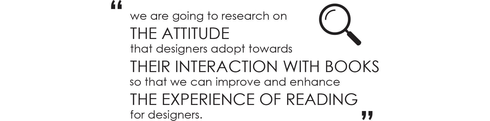
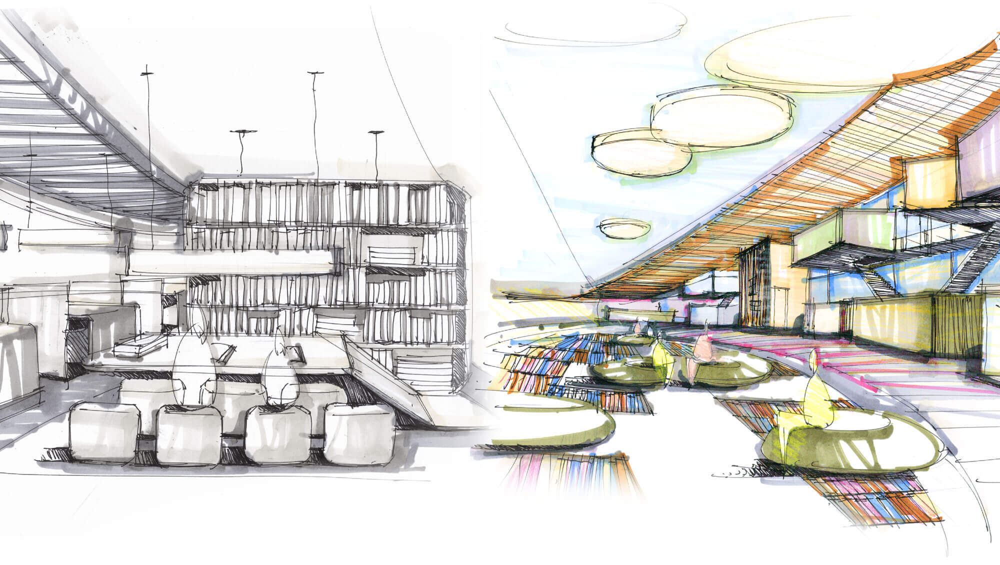
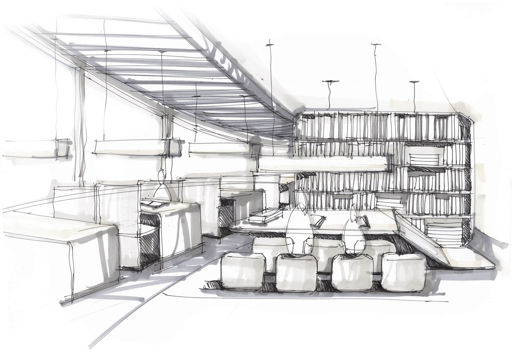
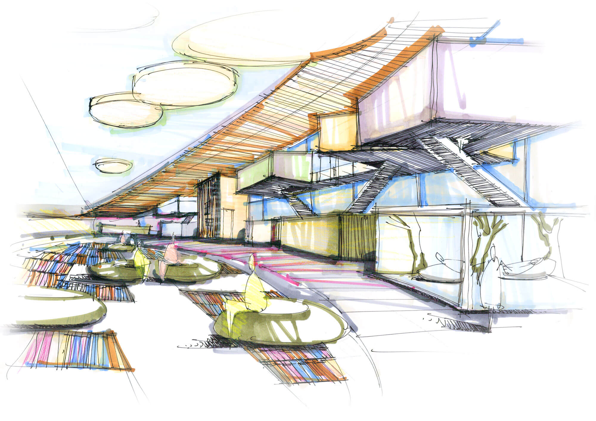
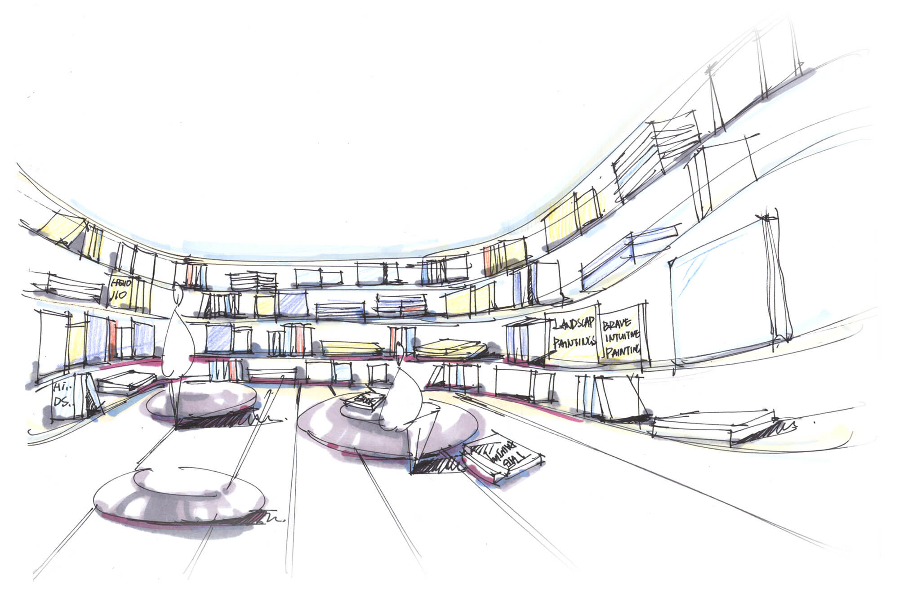

The State of Mind is a common ground designed for designers. The venue consists of different products, interiors and services designed to solve problems discovered based on the insights from research and field study. The concept imitates the way our brains works; a logical part ad a creative and emotional part. These two parts plays their unique role in enhancing the way designers acquire knowledge.The “Inspiration area” is an area designed to improve reading experience by implementing multi-sensory atmospheric stimulation. The intention of the interior is aimed to express a variety of design styles, aspiring to enhance inspiration by the manipulation of a comfortable and creative atmosphere. The “Knowledge area” is an area where we aim to reduce external interruptions in order for designers to focus on their readings. Both areas aim to transform its environment into the most ideal and multi-purpose reading space.
Project Brief
Introduction to The State of Mind
The Topic
What Are Books? How Do Books Relate To Knowledge?
Books are containers of knowledge
Books provide us knowledge and assit us in learning. Meanwhile, we can obtain extraodinary enjoyment and entertainment when we are reading as books involve different genres and are always delightful. Moreover, we seek for new insights and inspirations from the books as well. Since the beginning of the digital era, physical books are not the only choice we have. Some people still prefer physical books for the sake of their special tangibility while some may be into the digital format because they are extremely convenient and easy to access.
Target Audience
Do Designers Love To Read In General?
As significant reading is, here are some questions: “do designers read?”, “do they enjoy reading in general?”. According to the research, the answer is negative. Most of designers do not consider reading as an interesting activity. Why? Because they are people who are more impressed by visual stimulation instead of text. Reading itself a less proactive process and pure text does not visually appealing.

The Insight
Let's See What We Found in Research
Experience and attitude are two-way related
- Designers' reading attitude is tremendously influenced by the reading experience and it is essential to make the whole reading process engaging. A more delightful reading atmosphere may evoke intention or passion to read.
Environment and atmosphere matters
- Designers are captious about the reading environment and atmosphere around, which depend on their purpose of reading. if they are reading for work/study, a tidy and neat circumstance might be preferable, while as to leisure reading, certain feelings of privacy and comfort will be nice.
Organizing makes books accessible
- Sometimes people, not only designers, feel it difficult to organize books because it is physically demanding and time consuming. however, book management can make them more accessible and easy to find when needed. The reading pod keeps you isolated and transform your environment into a more private and comfortable reading space.
THE CONCEPT
The State of Mind - A Common Ground For Inspiration
Referring to the insights, we have designed an reading environment with special reading experience and atmosphere for designer. The State of Mind is a common ground for inspirations and design readings. According to human’s brain, the main reading area is divided into two - left one which is peaceful, neat and tidy, is for logical thinking and serious academic readings, while the one on the right is more colorful, casual and relaxing, designed for emotion, innovation boosting and design creation.
   Rotational Book Shelves
The books shelves are dynamically rotating and main genres for this area are mostly related to visual.
Designers can quickly scan and select the books they want.
Flooring Storage
A creative approach to line up books on the floor,
which provides readers to get access to books in a proactive manner.
Reading Pod
The reading pod keeps you isolated and transform your environment
into a more private and comfortable reading space.